InkMon 地块素材三条场景管线
当前 `inkmon美术探索` 里有三种新概念素材场景：硬边、顶面倒角、面片。 三者共享同一批 AI 生成 raw tile / decor 和同一张 Godot sandbox map； 差异主要发生在 source fitting、UV layout、Blender mesh/bake、以及最终 `baked_dir` 指向的资产目录。
一张图先看当前结果
这张对比图是当前三管线的视觉入口；下面的流程图会拆到每个阶段资产和脚本。
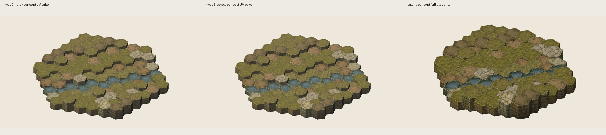
AI 输入与源素材
风格锚
`docs/concept.jpg` 是这轮新素材审美锚：暗橄榄草地、手绘石墙、厚重体块、清楚但不脏的墨线。
docs/concept.jpg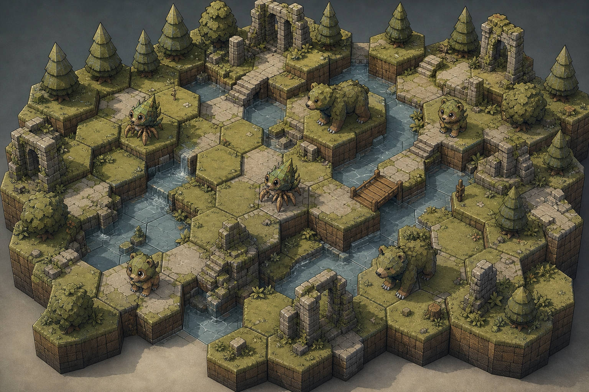
AI raw tile
texture-gen low quality 生成 4 种 terrain x 3 个 elevation 的完整 3D tile 白底图。
inkmon美术探索/concept素材-v1/raw/*_design_raw.png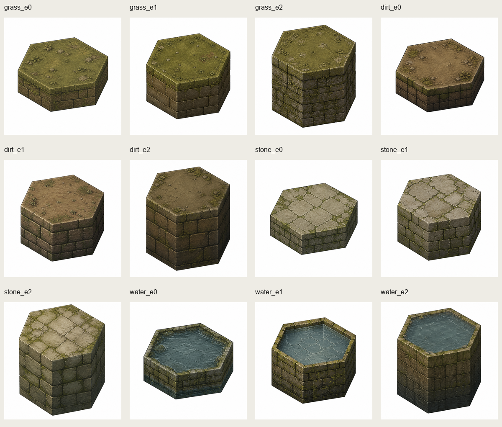
AI raw decor
同一风格生成树、灌木、石堆。后续作为独立 sprite 贴到 sandbox map 上。
inkmon美术探索/concept素材-v1/decor_raw/*_raw.png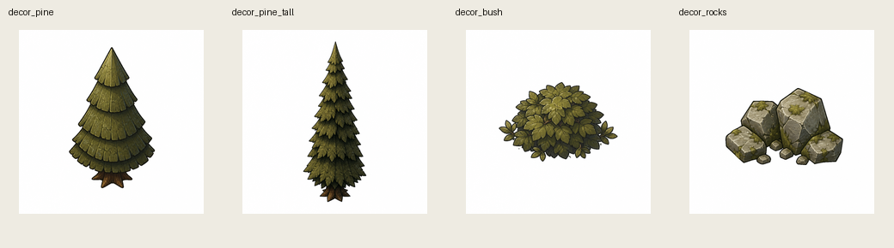
管线 A：硬边 / mode2_hard
标准 UV -> Blender 无 bevel bake -> Godot sprite 拼图读取完整 3D tile raw
输入来自 `concept素材-v1/raw`，不是 fable 旧纹理。
concept素材-v1/raw/grass_e0_design_raw.png ...反投影成 standard paper-net UV
`prepare_design_warp_uvs.py` 调 `texgen.warp.warp_design_to_uv()`，读取 standard design/uv sidecar，把 raw 图按 top/wall 面切到标准 UV。
concept素材-v1/tools/prepare_design_warp_uvs.py concept素材-v1/uv/*_warp_uv.png concept素材-v1/uv/design_warp_uv_report.jsonBlender 标准 hex prism，无 bevel
`bake_art_concept_uv_set.py` 使用 `mode2_hard`：同 standard prism topology，关闭 bevel modifier，关闭 smooth normals，samples=16。
blender/scripts/bake_art_concept_uv_set.py blender/scripts/texgen/tile_pipeline_modes.py::MODE2_HARD codex-硬边-v1/assets/concept-baked/*.pngGodot 硬边场景
`asset_scene.tscn` 只把 `baked_dir` 指到 hard baked 目录；场景拼装逻辑仍来自 `art_tile_map_base.gd`。
inkmon美术探索/codex-硬边-v1/asset_scene.tscn阶段性产物
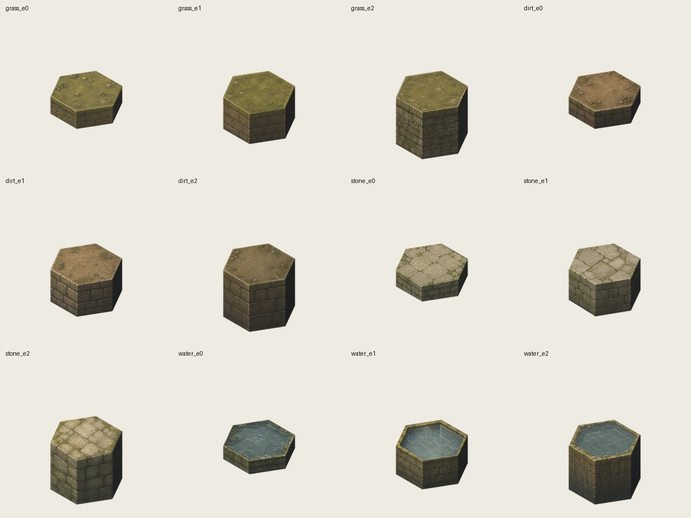
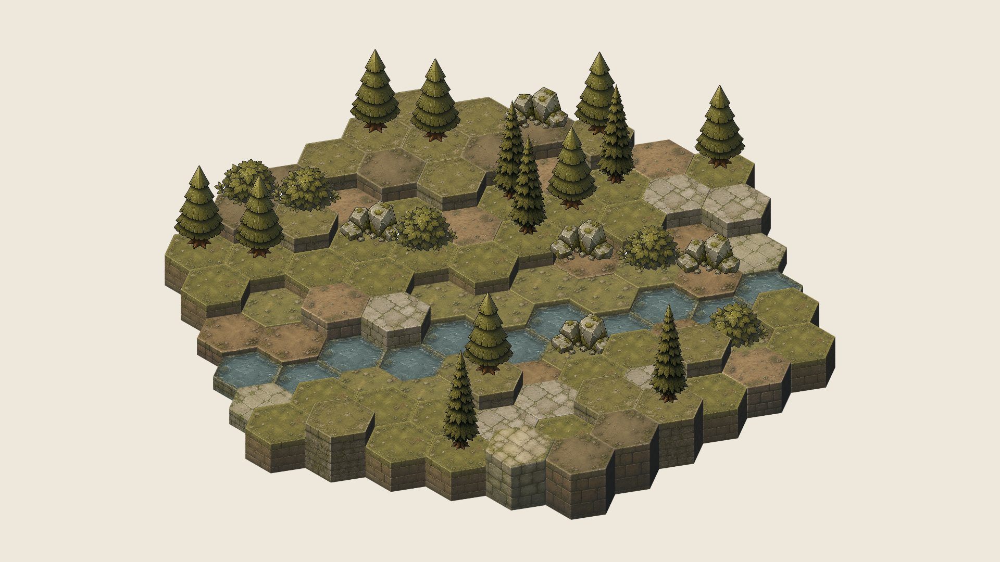
管线 B：顶面倒角 / mode3_top_edge_bevel
beveled UV -> explicit bevel mesh -> Blender bake -> Godot sprite 拼图读取同一批 3D tile raw
倒角管线不重新生图，继续使用 `concept素材-v1/raw`。
concept素材-v1/raw/*_design_raw.png生成 beveled design / UV sidecar 并拟合 raw
`prepare_beveled_uvs.py` 生成 `top + bevel_0..5 + wall_*` 的 design/uv layout，再用 bbox uniform fit 修正 AI 图偏差。
concept素材-v1/beveled_uv/sidecars/*.json concept素材-v1/beveled_uv/fit/*_beveled_design_fit.json反投影成 explicit top-edge bevel UV
倒角不能复用 standard paper-net UV；它有真实 bevel band 面，所以需要独立 UV。
concept素材-v1/beveled_uv/*_beveled_uv.png concept素材-v1/beveled_uv_wide_rim/*_beveled_uv.pngBlender 显式倒角 mesh
`bake_art_concept_beveled_set.py` 用 Python 建 `inner / outer / bottom` 顶点和 `top / bevel / wall` 面，贴 beveled UV 后渲染 512 PNG。
blender/scripts/bake_art_concept_beveled_set.py codex-倒角-v1/assets/concept-baked-wide-rim/*.pngGodot 倒角场景
当前优先看宽 rim 版本，参数 `bevel_inset_world=0.085`、`bevel_drop_world=0.050`。
inkmon美术探索/codex-倒角-v1/asset_wide_rim_scene.tscn阶段性产物
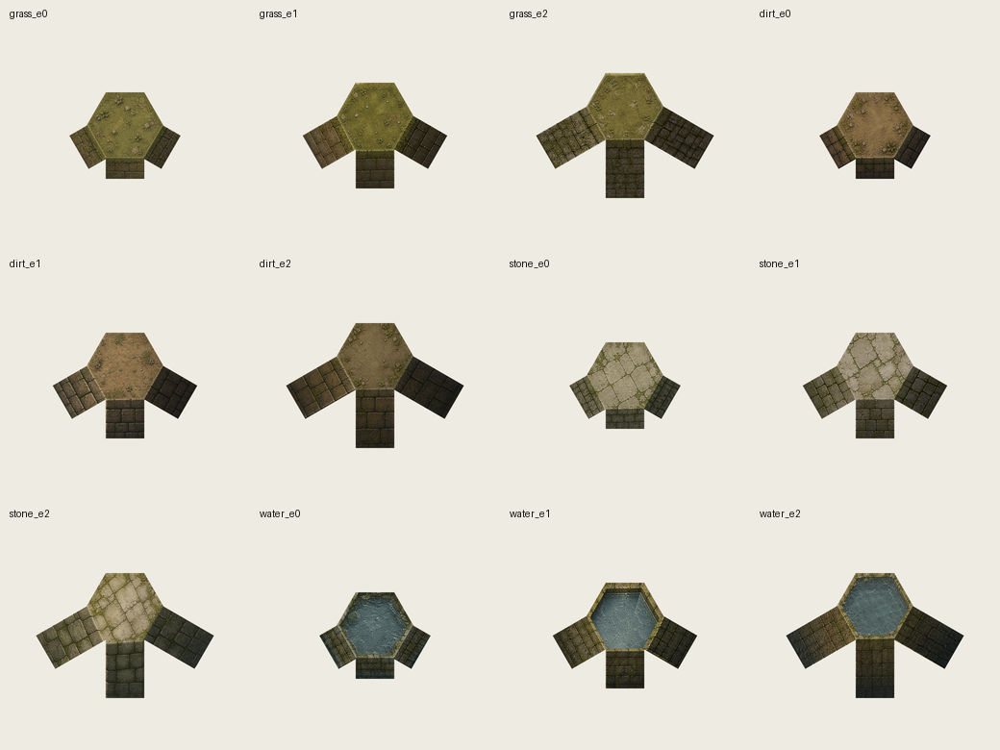
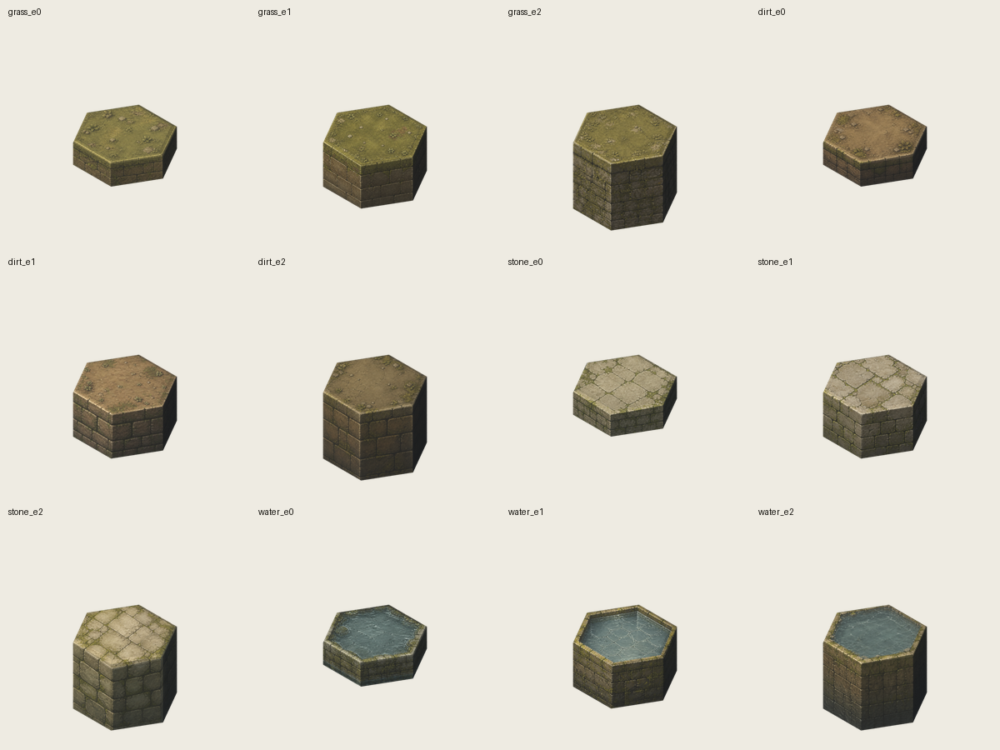
管线 C：面片 / full 3D tile patch
raw 3D tile -> alpha cleanup + fit compose -> Godot sprite 拼图直接保留 AI 3D tile 完整画面
这条线不走 Blender tile mesh bake，目标是最大化保留 raw 3D 图审美。
concept素材-v1/raw/*_design_raw.png复用 beveled fit sidecar 作为自动锚定依据
修复后的 `prepare_patch_assets.py` 读取 `origin_px` 和 top polygon width，把每张 raw compose 到 `512x512`、`anchor=(256,256)`、标准 hex scale。
concept素材-v1/beveled_uv/fit/*_beveled_design_fit.json concept素材-v1/tools/prepare_patch_assets.py清白底、透明化、锐化、写 manifest
输出本身就是 Godot 读取的透明 tile sprite；这条线没有 UV PNG、没有 Blender tile mesh 阶段。
concept素材-v1/assets/baked/tile_*_v0.png concept素材-v1/assets/baked/manifest.jsonGodot 面片场景
`asset_scene.tscn` 的 `baked_dir` 指到 `concept素材-v1/assets/baked/`。这一轮修复的重点就是 patch 图片要满足 manifest anchor/scale 契约。
inkmon美术探索/codex-面片-v1/asset_scene.tscn阶段性产物
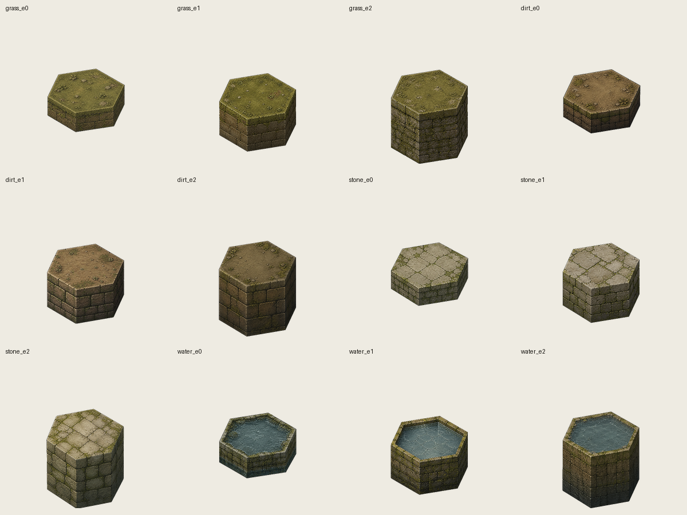
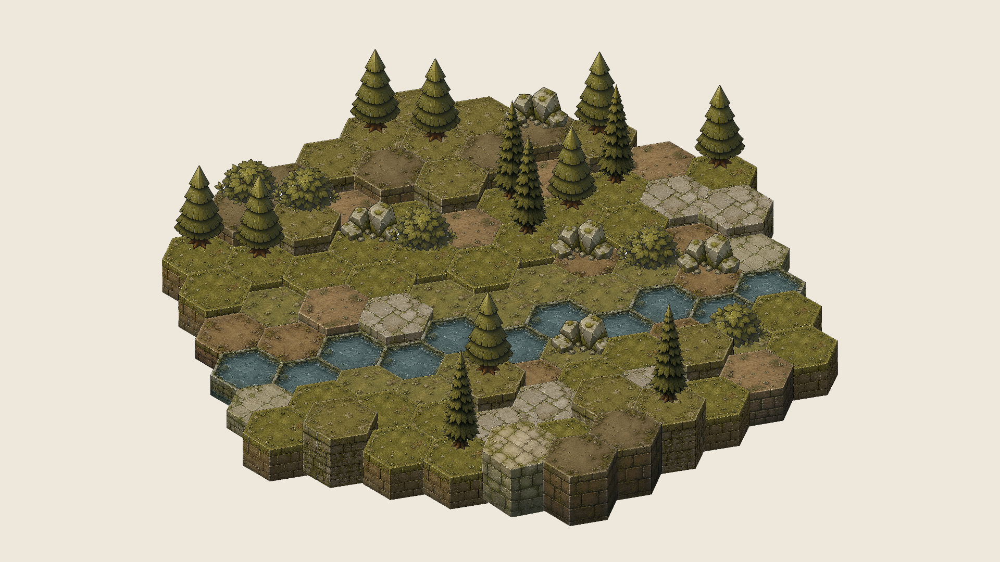
装饰物管线：三条场景共享同一批 concept decor
AI decor 白底图
树、灌木、石堆单独生图，避免继续混用 fable decor。
concept素材-v1/decor_raw/decor_*_raw.png清白底、按目标高度缩放、定位 anchor
`prepare_concept_decors.py` 把处理后的 decor 注入所有 concept baked manifest 和资产目录。
concept素材-v1/tools/prepare_concept_decors.py concept素材-v1/decor_processed/*.png`art_tile_map_base.gd` 按 terrain/tree 随机放置
decor 和 tile 使用相同 z_index 排序列表；每个 scene 只要 manifest 中有 `decor_*` 条目即可读取。
Decor 阶段图
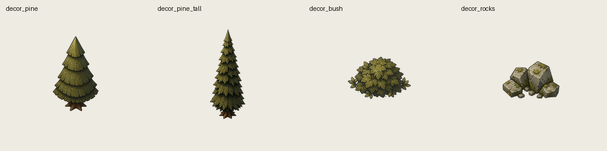
最终创建出 tscn 场景：Godot 端实际发生了什么
| 场景 | 读取资产 | 用途 | 最终截图 |
|---|---|---|---|
codex-硬边-v1/asset_scene.tscn |
codex-硬边-v1/assets/concept-baked/ |
无 bevel 几何 bake，诊断边界和 seam。 | concept_asset_decor.png |
codex-倒角-v1/asset_wide_rim_scene.tscn |
codex-倒角-v1/assets/concept-baked-wide-rim/ |
显式顶面倒角宽 rim，当前最接近厚重体块方向。 | concept_asset_wide_rim_decor.png |
codex-面片-v1/asset_scene.tscn |
concept素材-v1/assets/baked/ |
完整 3D tile patch，最保留 AI raw 审美。 | concept_asset_decor_fit.png |
{kind=link}
{kind=link}
{kind=link}
`program_scene.tscn` 是每条管线的程序化几何/排序基准；`asset_scene.tscn` 才是素材管线验证入口。 旧 `fable-圆角-v1` 仍保留为 production 圆角基线，不是这轮 concept 新素材的主候选。
复跑命令索引
下面是从 raw 到 tscn 截图的命令链。Blender 命令需要本机 Blender 可用；Godot 截图不能用 headless，因为 viewport texture 在 dummy rendering 下不可用。
# 1. 从 raw 生成 standard UV
python .\inkmon美术探索\concept素材-v1\tools\prepare_design_warp_uvs.py
# 2. 从 raw 生成 beveled UV 和 fit sidecar
python .\inkmon美术探索\concept素材-v1\tools\prepare_beveled_uvs.py
python .\inkmon美术探索\concept素材-v1\tools\prepare_beveled_uvs.py --out-dir .\inkmon美术探索\concept素材-v1\beveled_uv_wide_rim --bevel-inset-world 0.085 --bevel-drop-world 0.050
# 3. 从 raw + fit sidecar 生成透明 patch
python .\inkmon美术探索\concept素材-v1\tools\prepare_patch_assets.py
# 4. 处理并注入 concept decor
python .\inkmon美术探索\concept素材-v1\tools\prepare_concept_decors.py
# 5. Blender bake 硬边资产
blender --background blender/test.blend --python blender/scripts/bake_art_concept_uv_set.py -- --pipeline mode2_hard --uv-dir .\inkmon美术探索\concept素材-v1\uv --out-dir .\inkmon美术探索\codex-硬边-v1\assets\concept-baked --samples 16
# 6. Blender bake 顶面倒角宽 rim 资产
blender --background blender/test.blend --python blender/scripts/bake_art_concept_beveled_set.py -- --uv-dir .\inkmon美术探索\concept素材-v1\beveled_uv_wide_rim --out-dir .\inkmon美术探索\codex-倒角-v1\assets\concept-baked-wide-rim --samples 16 --bevel-inset-world 0.085 --bevel-drop-world 0.050
# 7. Godot import，确保 PNG 变更进入 .ctex
C:\Users\37065\.local\bin\godot_console.exe --headless --path D:/GodotProjects/inkmon/inkmon-godot --import
# 8. 非 headless 截图
$env:INKMON_ART_CAPTURE_PATH = "D:\GodotProjects\inkmon\inkmon-godot\inkmon美术探索\codex-面片-v1\shots\concept_asset_decor_fit.png"
C:\Users\37065\.local\bin\godot_console.exe --path D:/GodotProjects/inkmon/inkmon-godot res://inkmon美术探索/codex-面片-v1/asset_scene.tscn
Remove-Item Env:INKMON_ART_CAPTURE_PATH